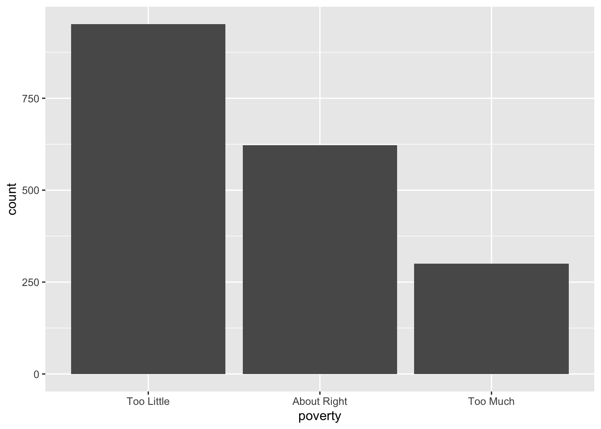
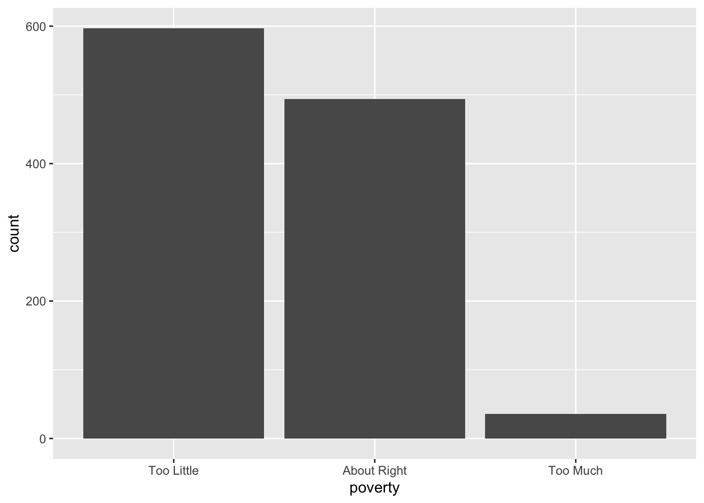
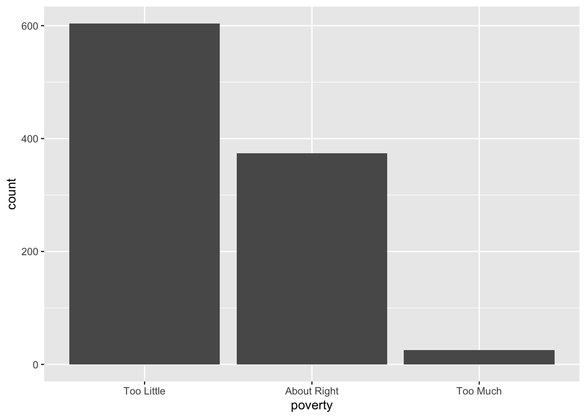
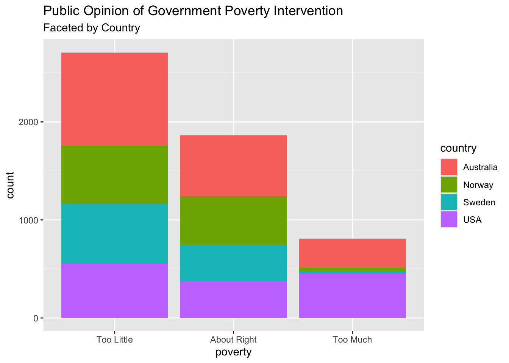

Portfolio 4
The Goal
With a few portfolio’s under my belt, I want to continue building off of the WVS data set to explore research questions not yet answered by the previous two projects. As we have both addressed public opinion of presidents in the United States, and now public opinion’s of government action in the United States, I think it is time to branch out to the other three countries included in the selected data set, WVS.
The goal of this specific portfolio piece is to dive into the three other countries to investigate whether the United State’s trends in data are universal or unique. As we are exploring public opinion of government poverty intervention, I am interested to see how Norway, Sweden, and Australia differ from that of the United States. The end result will be a visualization of all countries and how they differ in poverty response distributions. To assess earlier findings in relation to both the general trend across all four countries as well as the demographic variable’s effects on the poverty question, refer to portfolio pieces 2-3.
The Data
## [1] 5381## [1] 6To bring everyone up to speed, the WVS data set comes from the carData package. The data was derrived from a survey collected in the United States, Australia, Norway, and Sweden. The researchers of the study collected 5381 responses with most coming from Australian and American participants. Six total variables were assessed in the survey.
The main variable of interest that the researchers intended to measure was public opinion of the respective government’s action towards dealing with poverty in that country. Participants were asked the given question: “Do you think that what the government is doing for people in poverty in this country is about the right amount, too much, or too little?” to which they could respond: “Too Little”, “About Right”, “Too Much”. Other variables accounted for are described below.
poverty “Do you think that what the government is doing for people in poverty in this country is about the right amount, too much, or too little?” (ordered): Too Little, About Right, Too Much
religion Member of a religion: no or yes.
degree Held a university degree: no or yes.
country Australia, Norway, Sweden, or USA.
age in years.
gender male or female.
This is a co-ed sample with almost an even distribution of male and female participants. Additionally, the data surveys variables such as having a college degree and being religious. Age is also accounted for in this data set and will be used in future portfolio pieces.
Portfolio Pieces 2-3 Recap
In portfolio piece 2, we explored the demographics and distributions of participants within the data set. We also created a visualization depicting the survey’s general distribution of responses to the poverty question as see below.

As shown, the general majority of participants believe that their government is doing too little for the for the poverty issue in their country. The second most popular response was “just right” which indicates the particpants felt their government was handling the poverty issue in their country well.
In portfolio 3, I began to isolate the responses from individuals within the United States to investigate American public opinion compared to the general responses. The United States distribution of poverty question responses are below.

As seen in the bar plot above, the United States does not follow the same distribution as the general responses do. The second highest response was “too much”. We also learned from portfolio 3 that age was the only variable that begins to offer some explanation or effect for such responses in terms of predicting individual responses.
Now, I am interested to see how other countries compare in this data set.
The Product
Firstly, I will explore each country and their distribution of responses to how their government is handeling the poverty issue.
Australia
## [1] 1874## [1] 6This data set contains 1874 responses each representing an Australian participant.

The general trend apparent in Norway participant responses to the poverty question resembles the general distribution of all four countries. Differing from the United States but on par with average results, the most common response was that the government was dong “Too Little” for poverty followed close behind by “about right”.
Norway
## [1] 1127## [1] 6This data set contains 1127 responses each representing a Norwegion participant.

The general trend apparent in Norway participant responses to the poverty question resembles the general distribution of all four countries, only slightly more extreme as there are significantly fewer responses for the “too much” option.
Sweden
## [1] 1003## [1] 6This data set contains 1003 responses each representing a Swedish participant.
 The general trend apparent in Swedish participant responses to the poverty question resembles the general distribution of all four countries, only slightly more extreme as there are significantly fewer responses for the “too much” option.
Finally, I would like to build a visualization of the average responses, faceted by country so that we can interpret trends in data and patterns among different countries. I will add cosmetic design to enhance the visual.
ggplot(data = WVS, mapping = aes(x = poverty, fill = country)) +
geom_bar() +
labs(title = "Public Opinion of Government Poverty Intervention",
subtitle = "Faceted by Country")
The Interpretation
The United States appears to stand alone in its distribution as most people respond with the two extremes of the poverty question responses. Most Americans seem to think that the government is either doing “too much” or “too little” on the poverty issue with the fewest participants answering “about right”. This differs from Australia, Norway, and Sweden as their response distributions follow that of the average responses among all four countries. Although, Norway and Sweden stand slightly separate as they have the fewest responses within the “too much” category, most likely aiding in the average distribution as the United States responses diverge from the common distribution.
Norway, Sweden, and Australia all share the similar distribution with very few participants responding that their government is doing “too much”. On the other hand, the United States’ second most common response is this option in itself. It would be interesting to investigate some of the policy relating to poverty taking place in these countries to see whether public opinion reflects such advancements, or lack there of.